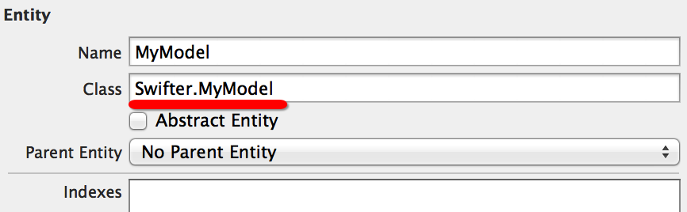

相信大多数开发者第一次接触到 Objective-C 的 @dynamic 都是在和 Core Data 打交道的时候。Objective-C 中的 @dynamic 和 Swift 中的 dynamic 关键字完全是两回事。在 Objective-C 中，如果我们将某个属性实现为 @dynamic 的话，就意味着告诉编译器我们不会在编译时就确定这个属性的行为实现，因此不需要在编译期间对这个属性的 getter 或/及 setter 做检查和关心。这是我们向编译器做出的庄严承诺，表示我们将在运行时来提供这个属性的存取方法 (当然相应地，如果在运行时你没有履行这个承诺的话，应用就会挂给你看)。
所有的 Core Data Model 类都是 NSManagedObject 的子类，它为我们实现了一整套的机制，可以利用我们定义的 Core Data 数据图和关系在运行时动态生成合适的 getter 和 setter 方法。在绝大多数情况下，我们只需要使用 Xcode 的工具自动生成 NSManagedObject 的子类并使用就行了。在 Objective-C 中一个典型的 NSManagedObject 子类的样子是这样的：
// MyModel.h
@interface MyModel : NSManagedObject
@property (nonatomic, copy) NSString * title;
@end
// MyModel.m
#import "MyModel.h"
@implementation MyModel
@dynamic title;
@end
很遗憾，Swift 里是没有 @dynamic 关键字的，因为 Swift 并不保证一切都走动态派发，因此从语言层面上提供这种动态转发的语法也并没有太大意义。在 Swift 中严格来说是没有原来的 @dynamic 的完整的替代品的，但是如果我们将范围限定在 Core Data 的话就有所不同。
Core Data 是 Cocoa 的一个重要组成部分，也是非常依赖 @dynamic 特性的部分。Apple 在 Swift 中专门为 Core Data 加入了一个特殊的标注来处理动态代码，那就是 @NSManaged。我们只需要在 NSManagedObject 的子类的成员的字段上加上 @NSManaged 就可以了：
class MyModel: NSManagedObject {
@NSManaged var title: String
}
这时编译器便不再会纠结于没有初始化方法实现 title 的初始化，而在运行时对于 MyModel 的读写也都将能利用数据图完成恰当的操作了。
另外，在通过数据模型图创建 Entity 时要特别注意在 Class 中指定类型名时必须加上 app 的 module 名字，才能保证在代码中做类型转换时不发生错误。

最后要指出一点，Apple 在文档中指出 @NSManaged 是专门用来解决 Core Data 中动态代码的问题的，因此我们最好是遵守这个规则，只在 NSManagedObject 的子类中使用它。但是如果你将 @NSManaged 写到其他的类中，也是能够编译通过的。在这种情况下，被标记的属性的访问将会回滚到 Objective-C 的 getter 和 setter 方法。也即，对于一个叫做 title 的属性，在运行时会调用 title 和 setTitle: 方法。行为上来说和以前的 @dynamic 关键字是一样的，我们当然也可以使用 Objective-C 运行时来提供这两个方法，但是要注意的是这么做的话我们就必须对涉及到的类和方法标记为 @objc。我并不推荐这样做，因为你无法知道这样的代码在下一个版本中是否还能工作。